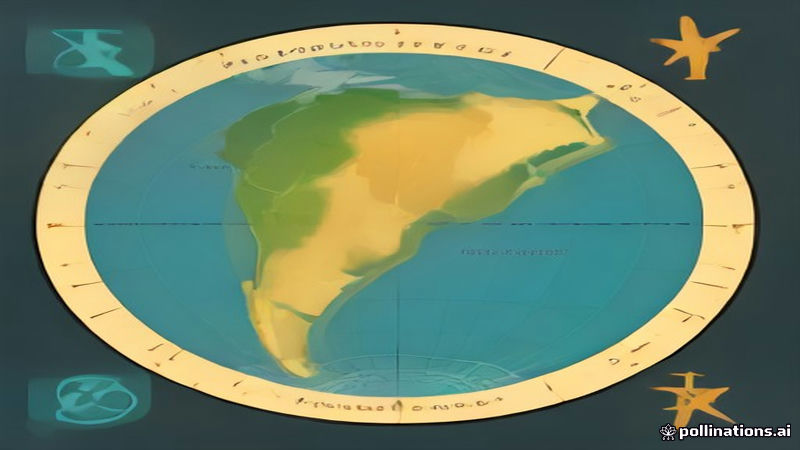

পোপ লিও১৪ উরুগুয়ে পৌঁছালেন ক্যান্সার সার্জারির পর দক্ষিণ আমেরিকার সফর শুরুতে
Al Jazeera English, DW, NPR World · 2026-11-07
AI-generated illustrationপোপের ১২‑দিনের, তিনটি দেশের সফর উরুগুয়ে, আর্জেন্টিনা ও পেরুতে ক্যান্সার অপারেশনের পর শুরু হয়েছে।
পোপ লিও১৪ উরুগুয়ে অবতরণ করে তিনটি দক্ষিণ আমেরিকান দেশে ১২‑দিনের সফরের সূচনা করেন, আল জাজিরা ইংলিশ ও ডি ডাব্লিউর মতে। তিনি গত মাসে ফুসফুসের ক্যান্সার সার্জারি করিয়েছেন এবং এখন একটি ঘনিষ্ঠ সূচি শুরু করছেন।
এই সফরে পোপ উরুগুয়ে, আর্জেন্টিনা ও পেরু পরিদর্শন করবেন, যেখানে তিনি দুই দশক কাটিয়েছেন, এনপিআর ওয়ার্ল্ডের রিপোর্ট অনুসারে। সফরটি তীব্র এবং পূর্ণসূচিকৃত হিসেবে বর্ণিত হয়েছে।
Read the original reporting at the links above.
English version
Pope Leo XIV arrives in Uruguay to start 12‑day South America tour after lung cancer surgery
Pope Leo XIV landed in Uruguay, marking the commencement of a 12‑day tour across three South American nations, according to Al Jazeera English and DW. The visit follows lung cancer surgery he underwent last month and initiates a tightly scheduled itinerary.
The journey will take the pope to Uruguay, Argentina and Peru, where he spent two decades, as reported by NPR World. The tour is described as intense and packed with engagements across the three countries.